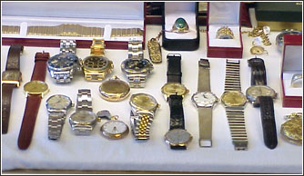

J. August Jewelry Consignment is a private jewelry company based in Amherst, New Hampshire. Our company is sustained by a loyal client base, referrals, and those who discover us in different ways. If you have just discovered us, we believe you will be very pleased with our level of experience and warm manner. You are invited to call or visit with any jewelry related needs or questions.
Offering world-class jewelry, we are a custom design company committed to the jewelry art, excellence, and are unwavering in maintaining the highest standards of the fine jewelry industry. We bring sincere warmth to your jewelry buying experience and are uniquely devoted to our customers and their satisfaction - regardless of the item or purchase price. We hope to develop a lifetime relationship with each of our customers and, as registered Jewelers in New Hampshire, our community. We hope to earn the opportunity to become your "Personal Jeweler."
Our business is founded on honesty, integrity and quality craftsmanship.
Today, jewelry design is considered to be as much an art form as a trade. As artists and designers of fine jewelry,we are known locally and afar for her high-quality work and standards.
In addition to academic education and apprenticeship, in the U.S. the Jewelers of America offer four letters of certification for jewelers. Each level is completed with both written and "bench" tests. The bench tests are hands on activities that the jeweler must complete to be awarded certification. Though many jewelers advertise themselves as professionals, certification tells you that your jeweler has acquired a certain amount of expertise in their field.
At J. August Jewelry Consignment, our staff can answer nearly any question about your jewelry and solve nearly any problem. Learn more about our jewelry and services.